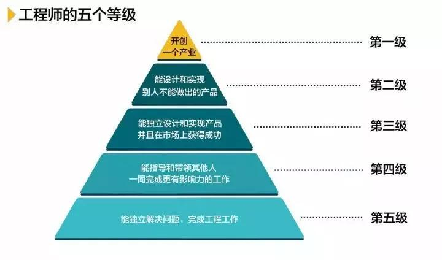

立冬刚过，迎面而来的是一股寒气。天气如此，市场亦是如此。昨天周五，和1个认识的技术专家老刘约饭，也算是线下面基，增进感情。每年我都要向比我高阶的朋友讨教。不由自主聊到了他的职场生涯。鱼哥一直以为自己命途多舛，听完他的经历后，我甘拜下风。在技术这条职业路上，走的太顺未必是件好事，我们一起聊到了码农要进阶，码农要延长职业生涯等相关问题。在码农行业中，绝大部分程序员的瓶颈在年薪60w-70w左右，这已经是天花板了，这是很多人不得不面对的问题，而一旦突破这个天花板后，就后面能顺利进阶成更厉害的技术专家。希望对大家进阶和突围，突破瓶颈有所启发~
背景：某TMD高级技术专家
学历：本科（二本)
工作年限：10年
老刘，人称教主，教主是09年计算机专业毕业，那时23岁，教主说他在大学就是玩，撩妹，女朋友谈了倒是不少，各个学院长的好看的妹子，他都敢去撩，也不怕被拒绝，死缠烂打，脸皮贼厚。教主本人个子不高，性格是那种痞痞的。毕业后，教主并没有从事开发工作，而是找了一份软件销售工作，类似于现在说的商务工作。他说，大概是在校园招聘时，来面试的女主管被他的滔滔不绝，口若悬河吸引了。他班上的同学，女生做测试相关工作较多，男生基本做开发的，他说，二本学校，没那么多人想着考研，隔壁班有3个考研，他们班一个都没有。
干软件销售，教主说他还是蛮喜欢的，那时的软件销售不是一般是企业ERP系统，一般客户多为国企或者事业单位。教主由于能说，每次主管带他去，基本上不会聊着冷场，但是客户一般会问很多ERP系统中的一些关注点。这些东西需要事先做好准备，每次遇到不会的，需要确认，再记录，所以他说那时起，他养成了记录总结的习惯。但是毕竟销售，不喝酒，不饭局，哪能增进感情。去公司尬聊，人家哪会鸟你。你吹的再厉害，人家还是和关系好的合作哇。中国是个人情社会，合作有时就是关系好坏。只要东西都差不多，肯定优先关系好的合作。利益照顾肯定是熟人。教主一边说，一边端起酒杯，说，走一个。他说他酒量其实不是太好，但是每次酒局时，他从不怯场，都是人群中，最能带起节奏和气氛的那个，酒精不燃烧，不算搞社交。但是喝完，中途他不得不去洗手间吐，然后吃点解酒药，回下状态。有次喝完去洗手间吐时，倒在地上，被送到了医院。医生建议他以后不能这样老是喝酒了，肝脏损伤有点严重。
他也想，这辈子总不能一直折腾自己的身体吧，他决定自己脑袋不笨，干开发应该也是没问题的，但是大学学的那点东西，早就忘记了，这让他陷入迷茫。此前班上玩的好的那波死党，给他建议是去参加培训。那时有个某马训练营，特别火，去他们那培训，必须都是有想关基础的，要通过他们的筛选考试，不然交钱都不给你名额，教主说，他一边划水，一边复习基础知识，前后搞了2个多月，对着某马训练营免费基础视频学习，一个一个敲，那段时间，教主至今都很怀念，说是一次非常重大的决心，同时也伴随着信念和坚持。后面通过考试，就正式去北京基地开始学习，苦逼的几个月过去后，教主由于比较会说，去了一个中型公司，待遇也还可以。由于缺少实际工作经历，去中型公司，只是涨经验。教主不满足在中型公司待着，要么就去碉一点的公司，不说头部大厂，起码混个知名公司。这个信念，教主一直没有动摇过。
工作1.5年后，他打算跳槽，想这次跳个知名点公司，于是做了大量准备，并不是很急的去投简历换工作。而是花更多时间放在磨刀上。这次确实跳到了一个知名公司，但是干了不到3个月，实在忍不了领导。他裸辞了。他说领导每天给很多任务，都是干到凌晨才回家。有些任务今天写完，明天产品说要改，领导也不抗议，就又让他改。在这种不是产品主导技术的公司，注定是把技术当牲畜。没有穷尽。那天天整业务逻辑，哪有时间提升技术。没法长期待。第3个月的一天，被领导骂的跟狗一样，教主无法忍受，于是离职了。他说有点搞笑的是，这个领导现在被裁员了，据说找不到工作，前段时间，问教主能否内推。教主说，工作本身大家是合作关系，都在一个圈的，尽量不要树敌。不然路会越走越窄。教主从那就公司，裸辞后，经历痛苦再次准备后，去了百度做小兵，百度那时正如日中天。他说这个实际上有部分运气原因，当时他面的那岗位恰好缺人。需要尽快开展相关工作。自己又刚裸辞，可以立马过去。领导对他要求是水了那么一点。他也清楚。但是好在进去了，这也是教主的一个转折点。毕竟进了百度，平台不一样了，后面跳槽还是有了很不错优势。
百度的工作，一点不轻松，百度的技术氛围那时很浓，那时TMD还没有如今的如日中天，他去的是百度贴吧。在当时算是非常重要一款产品，教主说，有些项目是可遇不可求的，就算去了同一个公司，有人在战略产品线中，有人在边缘产品线中，几年后，无论是技术还是视野也是不一样的，个人加成也是不一样的。回报更加不一样。教主说在贴吧，他犯过很多错误，那时百度对技术要求非常严谨，自己半吊子，经常挖坑，也经常遇到同事帮他填坑。但是前面说过，教主是个爱总结和记录的人，所以这些错误他都一一记录着，他说那几年，是技术成长最快的，他不断犯错误、改正错误、从错误中学习、分享错误、再重复这一过程。
他真正了解到，要变强，就要备受摧残，才能百炼成钢。凡事不去彻底研究，就永远停留在表面，后面依然会犯错，会不知道根本原因。教主说了吴军老师在《见识》一书中把工程师定义为 5 个等级，相邻的等级间会有 10 倍的差距，而第五级工程师以下其实就是码农。

在百度，比较深刻的一点，教主说是要学会Get到领导的重点，他分享这个时，举了一个例子，就是讲了一个《买橘子的故事》，这个故事大家可以自行网上看看，意思是说，职场中，我们大部分的人都是那个准点上班、工作“尽职”。而同时有这样的埋怨：“我做了这么多，升职的为什么不是我”，“我这么辛苦，领导老是说我不好”，……。只是做事而没有做完事、做“好”事、精益求精。只是领导手中的“算盘珠子”，不拨不会动。需要领导督促和鞭策才往前走一步。而另外一个人其实，就是他理解领导的意图，主动地往前走一步，更积极、更有效地将事情做好。
最后教主说的，要成为高阶人才或者专家岗位，除了在专业领域技术要过关，还要自己建立一套成熟的方法论，他说很多人做了很多不错的项目或者成果，就是不会在方法论上下功夫，给人感觉就是没有亮点，看不到亮点，然后就被盖下去了，这种方法论，我问他是不是吹逼，他说，当然不是吹逼，吹逼的话，是假大空。一听就听的出来。要知道评委或者面试你的，都是专家以上的，人家比你经验丰富着呢。能不能说清楚一个东西，就是不断去多说，说错不要紧，可以改，但是框架式的方法论需要套上去。才能体现你的成绩，你的亮点。
最后教主给的其他建议就是：
1、锻炼身体，体力活，除了拼技术，更要拼的是身体。
2、关注趋势，比闭门造车更重要。
3、多和行业更高阶的人交朋友，交流经验学习，更高阶的人可以点拨你，可以避免不必要的坑。
4、能写PPT，会总结记录，多做笔记。这个习惯就可以秒杀大部分人。
5、提高对自己要求，永远比岗位要求高一个段位，才能不断进阶下一个段位。
6、跳3个职级思考问题。开始有点难，慢慢你就能和别人与众不同。